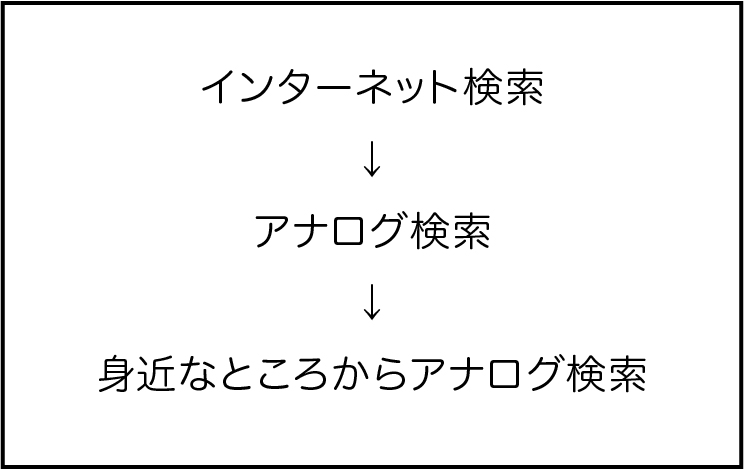
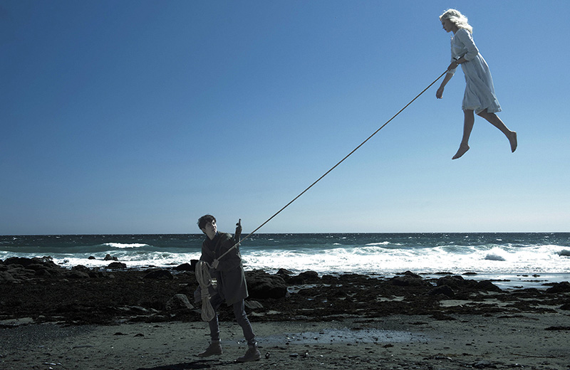
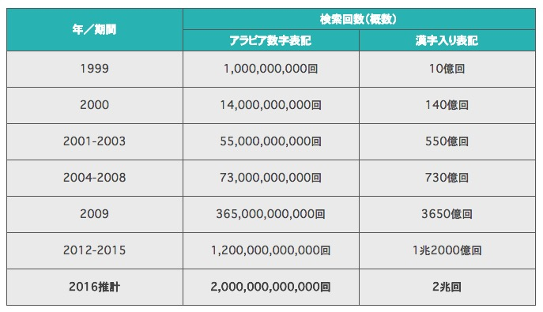
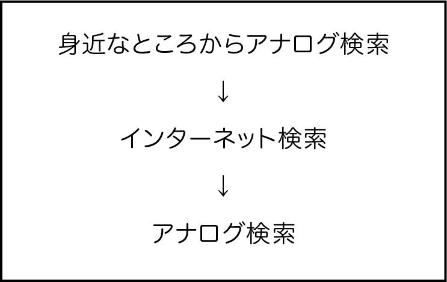

1
美術という勉強においてのインターネット活用
今まで習ってきた勉強にはそれぞれ答えがあった。自分で考えれば、調べ込む必要もなく答えが出た。しかし美術には答えがない。一つの方法が答えではないし、公式もない。色んな道から考え、自分が知らなかった分野に手を出したりして、調べて、考え出していくことが必要になる。私は、まだ頭に入っている美術の情報も少ない。だから良い作品を作り出すためには、調べることが必要になってくる。
アナログで情報を得る。
女子美にある図書館は私の身近なアナログの情報源である。そこにはたくさんの本が所蔵されており、多くの情報を得ることができる。方法として、私は自分の探している本を見つけ出すために受付で検索をして、出た番号をもとに本を探しに行く。そして、本棚にある中からお目当の一冊を見つけ出す。そうしてやっと、その本の内容を知ることになる。しかし、苦労して見つけて、求めていた内容と違った、なんてこともある。
2
ツールとしてのインターネット
私は情報を調べる時どう行動していくだろうと考えた。学校内にいる時なら図書館を利用することができるが、たいていの作品制作時は家にいるため、図書館まで行って探すことは面倒であり、スマホでの検索が最初の作業だろうと思った。先にも述べた通り、図書館での本探しは少し苦労がいる。たくさんの情報を一気に調べたい時、検索ワード一つ入れれば結果が出るインターネットに頼るだろうと推測した。
知りたい内容がインターネットに書かれてないことも多くあるため、そうなった場合には、図書館に出向き情報を探す。それでもなければ自分で考える、人に聞くなどするだろう。これが頭の中で考えた私の検索ルートだった。

しかし、これは現実的に自分の制作過程を思い返すと全く異なるものであった。
3
検索の宝探し
私がグラフィックの授業で雑誌「Cut」のデザインをしたとき、「ミスペレグリンと奇妙な子供たち」をメインの題材にして制作に取り組んだ。私はこの映画が好きなので、映画館・DVDと何度も見たことがあった。だから情報については自信のある方だったが、それでも雑誌を制作するとなると詳しいところまで抜けのないよう知りたいと思い、情報を探した。このとき、私はまず映画のパンフレットを読み込んだ。映画を見た時に映画館で直接購入したものであったから読んだことはあったが、何が書いてあったか、実はふんわりとした記憶だった。

読み込んでいく最中にこのキャラの詳しい写真はないか、と検索をかけたのがこの課題で最初のインターネット検索だ。しかし画質の良い写真はなかなか無かった。映画の写真はほとんどがYouTubeに載っている動画のスクリーンショットや私の持っているパンフレットの写真であった。他にメインに出てくるものは映画の取材やインタビューが主。インタビューと言っても役者のものではなく、映画を撮った有名なティム・バートンについてばかりだ。本当に情報源が少なかった。
Googleでは、年間2兆回も検索がかけられているそうだ。最近の映画の情報だとは言っても、そんな莫大な検索ツールなのに多くの情報はなかった。

SEOPack ブログ
Googleの検索で参考になるものが見つからないなら、アナログに頼るしかない。先にも述べたが先生や家族に聞いたり自分自身で考える。実際に思考の順をたどると

となることがわかった。身近なところから洗い出して、簡単な結論で終わってしまうのではインターネットが勝利してしまったと感じるが、そんなことはない。今回の映画の課題の場合、映画から受け取るイメージは人それぞれであり、自分が受け取ったイメージも間違っていないだろう。受け取ったものを具体的に自分の作品として消化することで私にとっての新たな学びにつながったと考えている。
4
短い期間の大きな変化
そもそもGoogleは一番良い検索ツールなのだろうか。私は小学校３〜４年生の頃からインターネットについての授業があり、その時からインターネットを使って調べ物をするようになったが、よく考えてみるとインターネットで参考にしていたのはウィキペディアだった。学校の先生は使ってはいけないと言っていたが、当時なぜそう言われるのか意味がわからなかった。ウィキペディア情報を参考にして、バレた試しがなかった。
私の小学校では社会の授業で頻繁に社会科新聞というレポートのようなものを書く宿題があった。その中で最近習った歴史上の人物や建物等について書かなければならないのだが、私はそもそも勉強が好きでは無かったため、教科書から調べたり、他の本から調べていくのも面倒だった。だから調べるのはインターネット。しかもメインの情報はウィキペディア。そして、もし補足で情報を付け足した方が良さそうなら他にも調べて付け足していくというような具合だった。
この作業工程はそんなに特別なことではないと思う。小学生なんてそんなものだろう。大人がなんと言っていようが簡単な方が良いし、勉強が好きであったり成績をあげたい等意図がなければ、そんな詳しく奥まで調べたりしないのではないだろうか。
しかし、この面において大きく変化した点がある。私が小学生の頃は自分のスマホは持っていなかったので学校で調べることが主だったが、今の小学生の６割はスマホを持っているというのだ。そうなると、スマホ紀元前の私たちと紀元後の彼らの生活では、まったく変わってきてしまうのではないだろうか。
5
スマホ紀元後の生活
今、私たちはスマホを常に携帯している。それが当たり前である。私は、スマホを持つようになった時期が中学三年生の終わり頃だった。既にiPhone５が出ていたが私が使い始めたのはアンドロイドであった。アンドロイドは本当にパソコンそのままという感じで驚いたのを覚えている。初めて使ったときは本当に何から何までわからず、LINEもクラスの友人は使い始めていたが、メッセージを読んだら既読という文字がついてしまう制度がそもそもわけがわからなかった。それを面倒に感じた。スマホを使用し始めたはいいものの、使うのはLINEとGoogleくらい、あとは電話機能という以前にもあった機能しか使っていなかった。Twitterを始めたのも高校２年の終わりと遅かった。それにもかかわらず、大学２年生の今スマホなしには生きていけないほど、スマホが日常化してしまっている。
生まれた時からスマホのある世代はどうなっていくのだろう。私の世代でさえネット詐欺に引っかかってしまったりネットの使用法を間違ってしまうというのに小学生が自分のスマホを持って正しく調べ物ができるのであろうか。調べ物をしている最中にウィルス感染をしてしまうサイトに飛んでしまい、個人情報を盗まれる等の被害にあう可能性もある。まだ頭もちゃんと育っていないのにスマホを持たせてしまったら創造力が失われてしまうのではないか。創造力が元々あって意欲のある人たちもいるかもしれないが、それはごく一部である。大衆の全てがそういう人ではない。最近はSNSの情報ばかりに振り回されて、思考力が減少している人が増えた印象を受ける。
6
現代のスマホ社会を表す音楽たち
キュウソネコカミの「ファントムヴァイブレーション」は２０１３年に発表されたスマホ依存症の若者の現状をコミカルに歌う曲だ。「スマホはもはや俺の臓器」というフレーズにスマホ世代の現状が現れている。現にスマホを自分の臓器同様に大切に毎日欠かさず持ち運び、それなしでは生活するのはブルーな気分になる人が大半だろう。冷静にこの曲を聴くと、自分がしていた今までのスマホへの執着が馬鹿馬鹿しく思えてくる。
韓国のR&B シンガーソングライター、DEAN の「Instagram」は SNS中毒者たちの言葉を代弁したような曲。
「DEAN - 1theKインタビュー（2017）」にて
この曲を作るにあたって、客観的な視線で自分が何をやっているか観察しました。自分は常にインスタグラムを見ていました。別に理由もなくインスタグラムを習慣的に見ていたんです。そんな些細な行動から「Instagram」を作ってみようと思いました。しかし、僕はインスタグラムをやると、とても憂鬱になりました。自分が憧れて、好きで、素敵な人たちをフォローするけど、そんな人に比べて自分はちっぽけに思えて。続けて綺麗でかっこいい人たちばかり目について、また自分自身と比較してしまったりして。彼らがどこかに遊びに行ったりすると僕は仕事しててこんなに辛いのにって。僕は人群れから離れた島にいるようでした。それがとても苦しかったんです。それで同じことを考えている人は多いんじゃないだろうかと思ってこの曲を作りました。
浪費だとわかりながらやるもの。SNSが浪費だってことはみんなわかっているけど、SNSって情報が多い空間ですよね。浪費だってわかっていても、それらの情報を見逃すのが怖くて、でも最近は情報が多すぎて...そんな情報が僕を苦しませていると思ったんです。
DEAN 1theKインタビューより抜粋
7
SNSの波
自分自身がグラフィックという分野に取り組むようになって、デザインを探る頻度が増えた。インスタグラムにも自分が作った作品を載せるようになった。そうしていくうちに、インスタグラムに自分の作品を載せている人たちの投稿をより頻繁に見るようになった。自分がいいな、好きだなと思ったアーティストのアカウントはフォローしているのだが、先にも述べたDEANのInstagram同様、自分と比較してしまって落ち込むことも増えた。SNSは、取り入れたくないような情報が目に入ることもある。何気なく習慣になってしまったスマホを使用する行為によって、いらない情報で頭をいっぱいにしてしまうこともある。知らなければこんなことは考えていなかったかもしれないと思うこともよくあることだ。
しかし、私はそんな生活になってから、まだ５年も経っていない。実は慣れていると考えているだけで、まだスマホという新しい機能に心奪われてしまっているだけなのかもしれない。期間限定とか、新〇〇みたいなものには目がいってしまうように。
大きな機能としては、ただパソコンの機能が持ち運べるようになっただけだ。特別だと思って、そんなに情報を見ようと必死になる必要はないのではないだろうか。暇つぶしをするときには、機能として多くを取り揃えたスマホは便利だが、それ以上に依存する必要があるのだろうか。今すべきことは芸能人が不倫したとか、離婚したとかそんな情報を知ることではないだろう。情報を得る手段はネットだけではないし、本や人に聞いたりする方が早く知りたいことを知れるかも知れない。
8
ツールとしてのインターネット
今までがアナログだけの検索であったなら、今はアナログとデジタルの融合技で検索をできるのだから確実に便利になっていっていると思う。それが、楽して知識が浅くなっていく方向ではなく、さらに深くなっていくことのできる使用方法になっていきたい。そのためには、垂れ流しの情報に振り回されないことが重要なのではないだろうか。自分の思考を明確に持って情報をうまく選択していくことのできる力が必要だ。私は検索していくうちに簡単に見やすい方を選択しがちだった。そこに正解が書いてあるのかをしっかり思考できていなかった。今回の検索についても、具体策を考えずにイメージすると先にインターネット検索を思いついていた。インターネットを新しく追加された簡単なコンテンツと認識しすぎてそっちの方が楽に多くの情報を得られると、どこかで思っていたのだと思った。